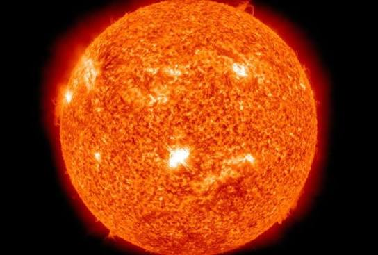

The Sun
The Sun is the heart of our solar system, a yellow dwarf star, a hot ball of glowing gases holding the solar system together. Its gravity keeps everything from the biggest planets to the smallest particles of debris in its orbit. The connection and interactions between the Sun and Earth drive the seasons, ocean currents, weather, climate, radiation belts and auroras.
At the core of the Sun, temperatures reach a staggering 15 million degrees Celsius (27 million degrees Fahrenheit). Here, nuclear fusion takes place continuously, converting hydrogen into helium and releasing the immense amount of energy that radiates outward into the solar system, providing the heat and light necessary to sustain life on Earth.